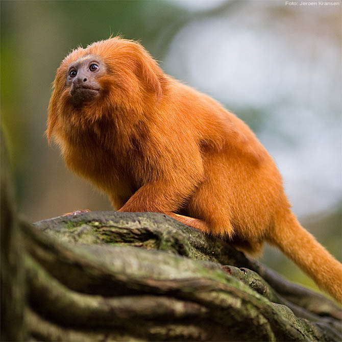

Mico-leão-dourado

-
O mico-leão-dourado (Leontopithecus rosalia) chama a atenção pela cor vibrante de seus pelos, que varia de dourado a vermelho-dourado. Assim como outros micos e saguis da família Callitrichidae, seu pequeno porte, sua longa cauda e sua agilidade fazem do mico-leão-dourado um dos mais simpáticos animais da nossa fauna.Ele vive cerca de oito anos, tem hábitos diurnos e, à noite, dorme em ocos de árvores ou emaranhados de cipós e bromélias. Se alimenta de frutos, animais invertebrados e pequenos vertebrados. Alguns estudos mostram que o mico-leão-dourado come mais de 60 espécies de plantas e, depois de digeri-las, ajuda a dispersar suas sementes pelo ambiente.
O mico-leão-dourado pode ser reproduzir uma ou duas vezes por ano e os períodos de reprodução vão de setembro a novembro e de janeiro a março. Não há diferenciação de cor e tamanho entre machos e fêmeas e, quando nascem os filhotes, tanto o pai quanto a mãe ajudam na criação.